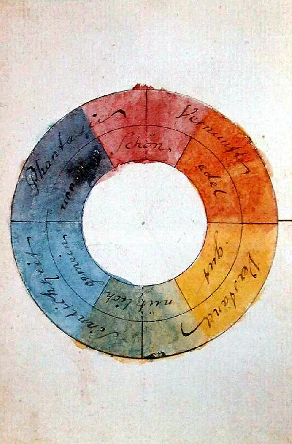
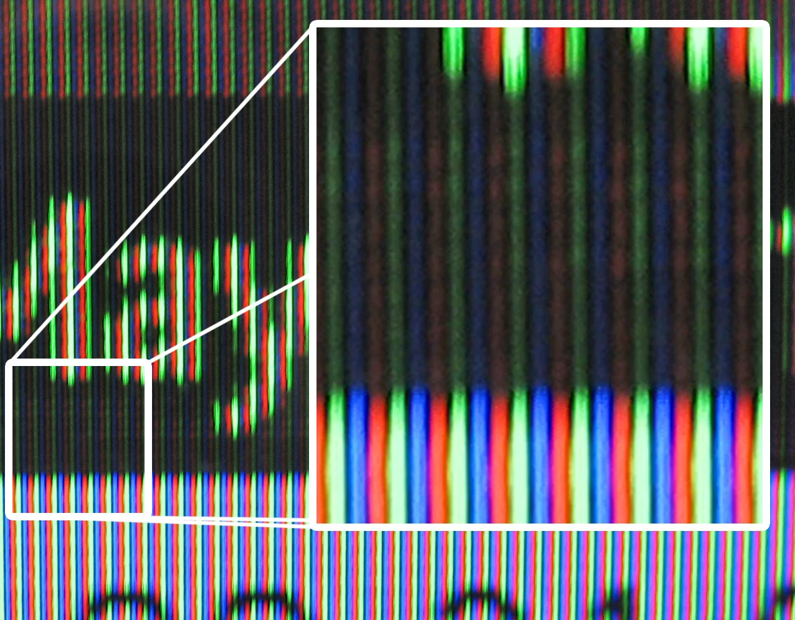

This week’s reading, Chromatic Algorithms: Synthetic Color, Computer Art, and Aesthetics after Code by Carolyn L. Kane, has made me rethink something I use every day but never question: colour on a screen. I type a hex code and the colour simply “appears”. Kane reminds me that this simplicity has a long and surprisingly wild history, and that every colour on screen is, in the end, a piece of code.

From optics to algorithms
Kane follows colour from Plato and Goethe, through Day-Glo and video synthesis, to early computer art and the alpha channel (Kane, 2014). What surprised me most is how emotional early computer colour was. The first computer-generated colours were so fantastic that artists and scientists saw them as psychedelic, even revolutionary, signs of a better future (Kane, 2014). Today nobody would call a default blue “revolutionary”. Our relationship with digital colour has become very calm, maybe too calm.
Standardisation and what we lose
Kane argues that personal computing and off-the-shelf software led to standardisation, which gradually closed the experimental space where computer artists had thrived (Kane, 2014). When colour became a menu option, it became easier to use but also more invisible. We choose from what the software gives us, instead of asking how the colour is produced.
Honestly, this made me look at my own work in an uncomfortable way. During my internship, I built a Bézier-curve colour tool to smooth uneven palettes, and it was adopted into the company’s design system. At the time, I only saw it as solving a practical problem. Now I realise I was part of exactly the process Kane describes, turning colour into rules and tokens. Consistency matters, but it also means unexpected colours may never appear.

Seeing the gap
Looking closely at an old colour TV screen makes Kane’s idea very physical. What we see as one smooth colour is really thin bars of red, green and blue light, mixed by our eyes. Every “colour” on a screen is a set of numbers deciding how bright each bar should be. When I tested this myself by mixing the same blue and yellow in plain RGB maths, the middle turned a dull grey, but in a perceptual colour space (OKLCH) it stayed vivid (Ottosson, 2020). The end colours never changed, only the maths in between.
In general, this week’s reading has made me understand that digital colour is not neutral. It carries a history of technology, commerce and standardisation. For my experimental practice, I want to work inside Kane’s gap, letting data, sensors or even mistakes generate colour, and learn when to follow the rules and when to break them on purpose.
Bibliography
- Goethe, J. W. von (1809) Farbenkreis zur Symbolisierung des menschlichen Geistes- und Seelenlebens [Online image]. Available at: https://commons.wikimedia.org/wiki/File:Goethe,_Farbenkreis_zur_Symbolisierung_des_menschlichen_Geistes-_und_Seelenlebens,_1809.jpg (Accessed: 10 October 2026). Public domain.
- Kane, C. L. (2014) Chromatic Algorithms: Synthetic Color, Computer Art, and Aesthetics after Code. Chicago: University of Chicago Press.
- Ottosson, B. (2020) ‘A perceptual color space for image processing’. Available at: https://bottosson.github.io/posts/oklab/ (Accessed: 10 October 2026).
- Ubcule (2009) Close-up of the phosphor bars on a Sony Trinitron colour television [Online image]. Available at: https://commons.wikimedia.org/wiki/File:Trinitron-bars-detail-enlarged.jpg (Accessed: 10 October 2026). Licensed under CC BY-SA 3.0.